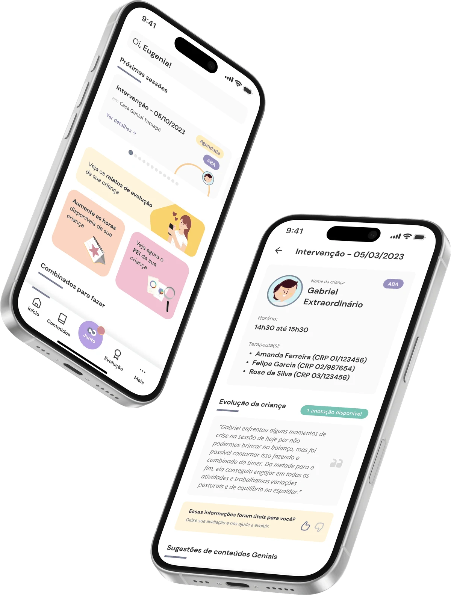
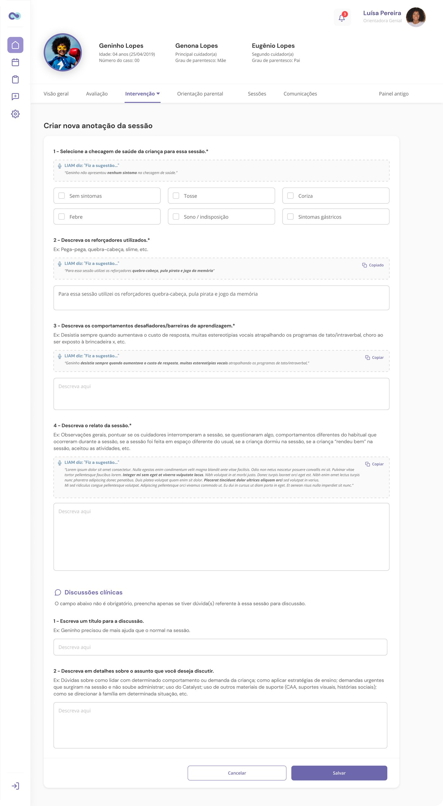
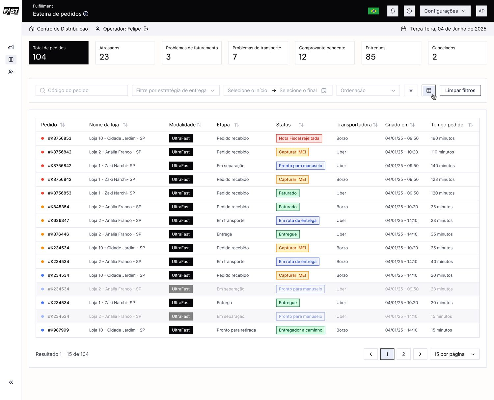
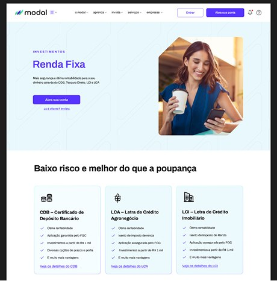
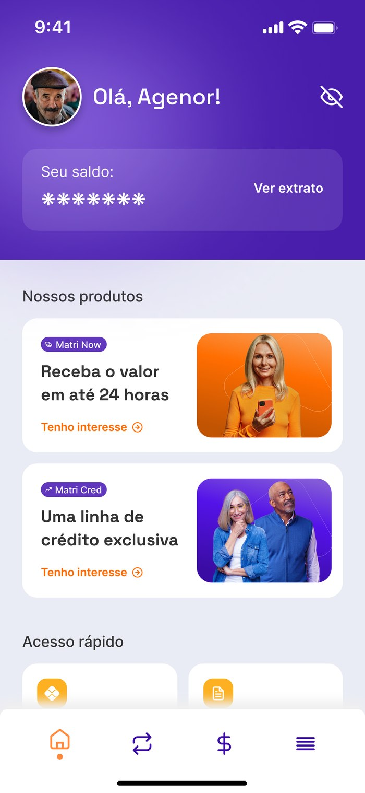
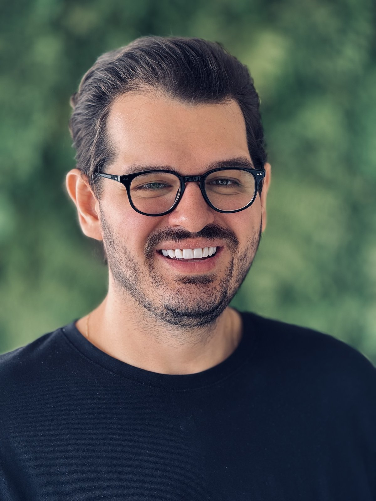

Senior Product Designer turning complex systems in healthcare, enterprise logistics, and consumer trust into decisions people can act on. Currently designing for platforms that serve 20M+ users a month.
Healthcare, enterprise logistics, and consumer trust are different industries, but the job is the same: turn complexity into a decision someone can act on immediately.

When I joined Genial Care, Brazil's leading autism care platform, the family-facing app was read-only, content to scroll with nothing to act on. The real problem wasn't the app: it was session scheduling, built and rebuilt by hand every week by an overloaded operations team. We shipped an MVP in a month letting families see their schedule and cancel a session themselves, and it worked immediately. From there, each release earned its place by giving families another reason to open the app, pulling another manual task off operations along the way.
Once families were actually opening the app, the next bottleneck was on the other side: therapists spent up to two hours after every session manually reconstructing what happened, from memory, for mandatory clinical reports. I designed LIAM, an AI assistant that lets therapists narrate the session out loud as it happens; LIAM organizes the audio, understands clinical context, and drafts the required report fields automatically. The therapist reviews, edits, and sends, so nothing goes out unchecked.


Fast Shop needed to migrate 80+ stores and 22,000+ SKUs onto a single delivery platform. I designed Pick & Pack around three perspectives at once (store, distribution center, and driver) plus exception flows for failed deliveries and returns. Alongside it, I built the Compass Design System from scratch and delivered PIM and DevTools.
Reclame Aqui is Latin America's largest consumer reputation platform: 20M+ monthly visitors, 750K+ registered companies, and roughly 46K complaints a day. I lead end-to-end design for Compra Confiável, the trust layer that surfaces reputation and resolution scores at the moment of purchase, inside Brazil's $200B+ e-commerce market.
I joined 7COMm as a support intern and left five years later as a Senior UX/UI Designer, moving through support analyst and programmer analyst while picking up UX work on the side. When the agency designing Modal's site dropped the project mid-way, I took over the Figma file and shipped it, the work that earned the senior title.

Staff Product Designer on white-label digital banking across web and mobile, balancing regulation, business goals, and user needs. Designed the flow for credit products backed by court-ordered government payments, which lifted contracting 30% in its first 3 months, and built the Matri Design System adopted by Matri Bank and Startec Bank.

As his design manager at Genial Care, I watched Guilherme's work grow increasingly strategic, always aligned to product and business goals, with a high bar for quality. I strongly recommend him to any team after a designer who's engaged and focused on real impact.
Guilherme has a sharp critical and creative eye, and a real commitment to what he ships. We ran projects in close partnership and the quality was always there. Watching him work live in tools like Figma was mesmerizing, the speed of his vision and execution.
Working with Canna was incredible. He has an exceptional ability to translate user pain into effective solutions, backing the team with concrete deliverables and quality at every step. I recommend him without reservation to any team after design excellence and real results.

Greater Boston, Massachusetts10+ years in technology, 6+ of them in product and UX design. I started as a support intern monitoring enterprise systems, moved into development, then into UX. That path is why I default to systems thinking over decoration, and why engineers rarely have to translate my files.
I've designed inside a startup squad shipping an MVP in a month and inside a platform serving 20M+ monthly users, where one flawed decision moves national-scale metrics. Same instinct at either pace: find the real constraint and design around it. Along the way I've built three design systems from scratch, Compass, Matri, and Atípico, and the DesignOps practices that keep them alive.
I treat AI as part of my craft, using it for research, benchmarks, and pressure-testing concepts early, so I spend more time on judgment and less on busywork. I work with LLMs and custom AI agents day to day, and lately I've been building with Claude Code to ship small experiments straight to production, this site among them.
Startup pace to 20M-user scale, same systems instinctPick whichever's faster for you.